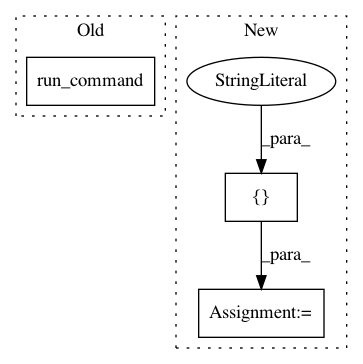

3239b81335c6a63e209ee9419f4efeea167e40bc,src/sos/workers.py,WorkerManager,start_worker,#WorkerManager#,543
Before Change
try:
from .hosts import Host
host = Host(wh, start_engine=False)
host._host_agent.run_command(["python", "-m", "sos.workers"])
except Exception as e:
raise RuntimeError(f"Failed to start workers on host {wh}")
self._num_workers[idx] = self._max_workers[idx]
self.report("start {nw} remote workers on {wh}")
After Change
"--sig_mode", env.config["sig_mode"], "--run_mode", env.config["run_mode"],
"--workdir", os.getcwd(), "-v", str(env.config["verbosity"])]
if max_worker is not None:
cmd += ["-j", str(max_worker)]
p = host._host_agent.run_command(cmd, wait_for_task=True, shell=False)
self._remote_connections.append(p)
except Exception as e:
env.logger.error(f"Failed to start workers on host {worker_host}: {e}")
raise RuntimeError(f"Failed to start workers on host {worker_host}: {e}")
In pattern: SUPERPATTERN
Frequency: 3
Non-data size: 3
Instances
Project Name: vatlab/SoS
Commit Name: 3239b81335c6a63e209ee9419f4efeea167e40bc
Time: 2019-08-05
Author: ben.bog@gmail.com
File Name: src/sos/workers.py
Class Name: WorkerManager
Method Name: start_worker
Project Name: eth-cscs/reframe
Commit Name: d093821282aefd1185216307634111b7ce59a127
Time: 2017-06-26
Author: karakasis@cscs.ch
File Name: unittests/test_cli.py
Class Name: TestFrontend
Method Name: test_check_success
Project Name: eth-cscs/reframe
Commit Name: d093821282aefd1185216307634111b7ce59a127
Time: 2017-06-26
Author: karakasis@cscs.ch
File Name: unittests/test_cli.py
Class Name: TestFrontend
Method Name: test_sanity_of_checks